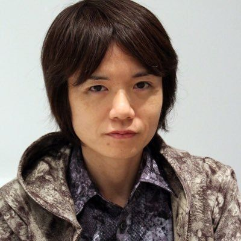

Masahiro Sakurai ( 桜 井 政 博 Geboren op 3 augustus 1970) is een Japanse videogamebestuurder en game-ontwerper. Hij werkt bij Nintendo en staat het best bekend als de maker van de Kirby serie en de Super Smash Bros. serie.

Hij leidde ook het ontwerp van Meteos in 2005 en hij leidde Kid Icarus: Uprising in 2012.
Hij was eerst een werknemer bij HAL Laboratory
totdat hij zijn eigen bedrijf Sora Ltd. in 2005 had opgericht, een bedrijf dat hij nog steeds leidt.
Hij is ook auteur van een wekelijkse column voor Famitsu magazine en is in sommige games die hij heeft gemaakt zelfs stemacteur.